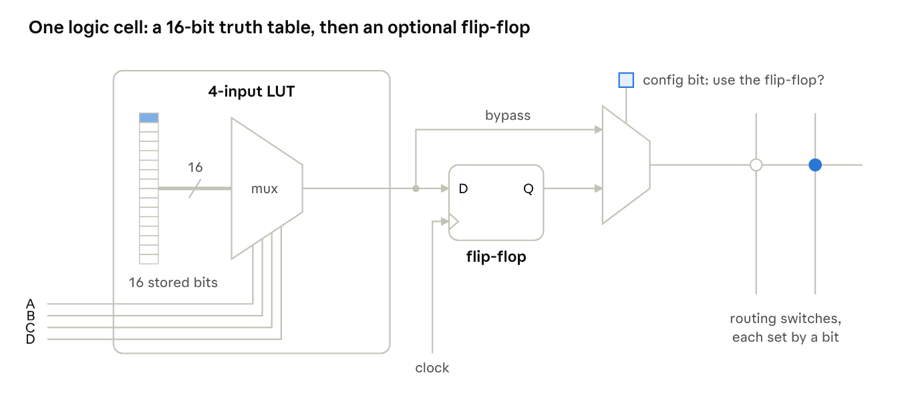
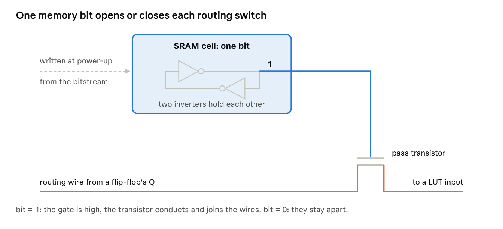
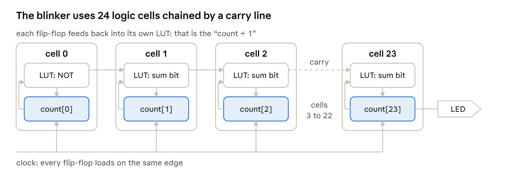
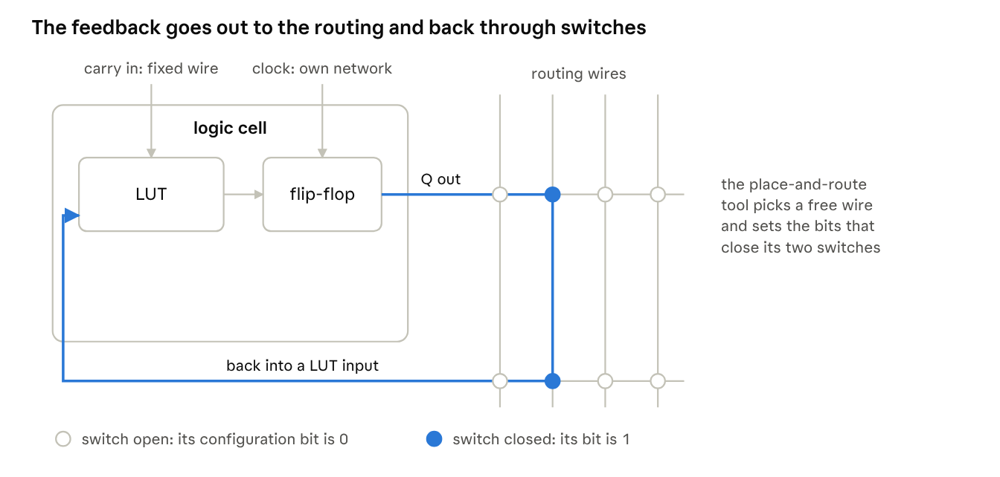

> LIST
FPGAs for beginners
Felipe Dimer de Oliveira, 15 November 2026. Written with Claude.
What an FPGA is
An FPGA (field-programmable gate array) is a chip full of small logic blocks and flip-flops that start out unconnected, plus a mesh of wiring with electronic switches at every crossing. You describe a digital circuit in text; tools turn that into a configuration file that sets every switch and fills every block. Load it, and the chip becomes your circuit: a ZX81 ULA, a Z80, a video generator, or all three at once.
The key difference from a CPU: a CPU is fixed hardware that runs instructions one at a time. An FPGA runs no program at all. Every part of the circuit you described works at the same moment, the way a board of 74-series chips does. A counter, a shift register and an address decoder all tick on the same clock edge.
The Ferranti ULA is the FPGA's ancestor. It was a gate array: an uncommitted grid of gates on the wafer, customised for Sinclair by one final metal wiring layer at the factory. An FPGA does the same job with the wiring held in on-chip memory instead of metal, so it can be rewired in the field, in seconds, as often as you like. Most FPGAs keep that configuration in volatile memory and reload it from a small flash chip at every power-up.
What's inside
An FPGA is mostly thousands of identical cells, each a look-up table (LUT) feeding a flip-flop, with programmable wiring between them. The LUT is the clever part: a 4-input LUT is just a 16-bit memory. Its four inputs form an address, and the bit stored there is the output. Fill those 16 bits with a truth table and it becomes any logic function of four inputs: a NOR, an XOR, a 4-to-1 multiplexer, whatever you need. Bigger functions are chained from several LUTs.

The inputs A to D pick one of the 16 stored bits. Here the bits hold a 4-input NOR, like the ULA's gates: only address 0000 (the filled bit) stores a 1. A configuration bit then sends the result straight out or through the flip-flop, and more configuration bits close the routing switches that wire it to other cells.
| Part | What it does | In ZX81 terms |
|---|---|---|
| Look-up table (LUT) | Any logic function of 4 to 6 inputs, set by its stored truth table | A handful of the ULA's NOR gates rolled into one |
| Flip-flop | Stores one bit, updated on a clock edge | The ULA's D-types: shift register, latches, counters |
| Routing | Wires with programmable switches joining every cell | Ferranti's custom metal layer |
| Block RAM | Kilobytes of memory on the chip | The ZX81's 2114 RAM and its ROM |
| Clock network and PLL | Low-skew clock wiring; a PLL makes new frequencies from one input | The 6.5 MHz resonator and the ULA's divider |
| I/O blocks | The pins, with selectable voltage standards | The ULA's pin cells on the 2C158/2 sheet |
| DSP blocks | Hardware multipliers | (nothing; the ZX81 had none) |
For scale: Lattice's iCE40 UltraPlus UP5K has 5,280 LUTs, 120 kbit of block RAM and 1 Mbit of single-port RAM (Lattice). The Tang Nano 9K board's Gowin GW1NR-9 has 8,640 LUTs, 6,480 flip-flops and 468 kbit of block RAM (Sipeed). The whole ZX81 ULA netlist is 216 elements, so either chip has room for the ULA, a Z80 and the RAM besides.
One caution for later: most current small FPGAs run their pins at 3.3 V or less and are not 5 V tolerant. A drop-in replacement for the 5 V ULA would need level shifters on its pins.
How the configuration bits control the hardware
Every routing switch is a single transistor between two wires, and its gate is driven by one bit held in a small memory cell right beside it. The cell is the same 6-transistor SRAM cell used in cache memory: two inverters in a loop, each holding the other's output, so the bit stays put while the chip runs.

- Switches come in groups. A LUT input usually chooses among a handful of nearby routing wires through a multiplexer, so a few bits (3 for 8 wires, 4 for 16) pick the connection, not one bit per switch. The LUT's 16 truth-table bits are the same kind of memory cell.
- Loading the bits. The memory cells are laid out in rows and columns across the chip, like a RAM. At power-up a small configuration controller on the FPGA reads the bitstream from the board's flash chip and writes it in, column by column, then lets the design run. SRAM forgets at power-off, so this happens at every power-up.
- Other kinds of FPGA keep the bits differently: flash-based parts (for example Microchip's PolarFire) remember them and start instantly; antifuse parts burn each switch closed once and can't be reprogrammed.
This is also why an FPGA is slower and larger than a custom chip like the Ferranti ULA: every connection passes through transistors rather than plain metal, and much of the chip's area is configuration memory.
How you program one
You don't write a program; you write a description of a circuit, in a hardware description language (HDL), and a chain of tools builds that circuit out of the chip's cells. The two common HDLs are Verilog and VHDL. Verilog is the shorter of the two and is what the ZX81 ULA design uses.
More exactly, Verilog describes a circuit at the register-transfer level (RTL). You say which registers exist and what each one holds after the next clock edge. You don't say which gates compute that, which cells they sit in, or how they are wired: the tools decide all of that. So a line like count <= count + 1 names no gates at all, yet it fully defines the circuit's behaviour, clock by clock. What you do control:
- What the circuit does: the registers, the logic between them, and the clock that steps them.
- The pins: a short constraints file maps each signal to a package pin.
- The speed: you state the clock frequency; the tools report whether the routed circuit meets it, and if not you change the Verilog, never the wiring.
Everything else (the choice of LUTs and flip-flops, where they sit, which routing wires join them) is the tools' job, and you never see it unless you go looking.
The steps, each done by a tool:
- Describe the circuit in Verilog: modules with inputs and outputs, wired together like chips on a board.
- Simulate it. A testbench (more Verilog, or a program) drives the inputs, and you inspect the outputs as waveforms. Most bugs are found here, long before any hardware. The ULA's
tb.jstestbench is exactly this. - Synthesise. The synthesiser (Yosys, the tool we already used on the ULA) turns the description into LUTs and flip-flops.
- Place and route. The tool picks a cell for each LUT and flip-flop and routes every wire between them. A constraints file tells it which signal goes to which pin and how fast the clock is.
- Check timing. Every path from one flip-flop to the next must settle within one clock period. The report gives the fastest clock the design can take.
- Generate the bitstream and load it over USB: into the FPGA itself for a quick test (lost at power-off), or into the board's flash to keep it.
The mindset shift is the hard part for software people, and probably easier for you. Every line describes hardware that exists all the time, and everything runs at once. Good FPGA designs are synchronous: one clock, and every change happens on its edge. The tools ignore gate delays, so tricks that use a delay to make a pulse, which the Ferranti ULA relies on, don't survive synthesis. That is why the ULA work has two versions: the gate-level netlist that copies the chip, and 2c210_sync.v, the same behaviour rebuilt on one 13 MHz clock for an FPGA.
A first example: blinking an LED
The "hello world" of FPGAs is a counter whose top bit drives an LED. Here it is in Verilog:
module blink (
input wire clk, // the board's clock, here 12 MHz
output wire led // one pin, wired to an LED
);
reg [23:0] count = 0; // 24 flip-flops holding a number
always @(posedge clk) // at every rising edge of the clock...
count <= count + 1; // ...store the number plus one
assign led = count[23]; // the LED follows the top bit
endmodule
Read it as a schematic, not as instructions:
moduleis a chip with pins: one input, one output.reg [23:0] countplusalways @(posedge clk)makes a 24-bit register: 24 D flip-flops sharing one clock.count + 1is a 24-bit adder feeding the flip-flops' D inputs. Nothing "runs": the adder is always there, and every clock edge loads its result.assignis just a wire from bit 23 to the LED pin.

Each bit of count takes one logic cell. Its LUT works out the next value of that bit from the bit itself and the carry from the cell before; its flip-flop stores it on the clock edge. Cell 0 only needs an inverter, since bit 0 just toggles. The LED is wired to cell 23's flip-flop.

The feedback from each flip-flop to its LUT is ordinary routing. The flip-flop's output goes out onto a routing wire, and a switch set by a configuration bit connects that wire back to one of the LUT's inputs; the place-and-route tool chooses the wire and sets the bits. Two things don't use the general routing: the carry runs on a fixed wire to the next cell, and the clock has its own dedicated network so it reaches every flip-flop at the same moment.
Run through Yosys for a Lattice iCE40, this becomes 24 flip-flops and an adder of 23 LUTs on the chip's carry chain. At 12 MHz, bit 23 changes every 2^23 / 12,000,000 ≈ 0.7 s, so the LED blinks about once every 1.4 s.
The ZX81 ULA's 2c210_sync.v is written in exactly this style, only longer: counters, a shift register and some decoding, all stepping on one clock.
Tools and boards to start with
A cheap Lattice or Gowin board and the free open-source tools are enough for everything up to a ZX81 on a chip.
Software. OSS CAD Suite is one download with the whole open toolchain: Yosys (synthesis), nextpnr (place and route), Icarus Verilog and Verilator (simulators), GTKWave (waveform viewer) and openFPGALoader (loads boards). It runs on Windows 10 and 11, though its makers recommend WSL (Linux inside Windows) for the best experience. Each vendor also has its own free tool: Gowin EDA for the Tang Nano boards, AMD Vivado for Xilinx boards such as the Arty. For trying Verilog with no install at all, EDA Playground simulates in the browser and shows waveforms.
| Board | FPGA | Size | Notes |
|---|---|---|---|
| Sipeed Tang Nano 9K | Gowin GW1NR-9 | 8,640 LUTs, 468 kbit RAM | Small and cheap, HDMI socket, Gowin EDA; room for a whole ZX81 |
| Lattice iCEstick | Lattice iCE40HX1K | the smallest iCE40 | About US$40; fully open-source tools; the first board of the learn-fpga tutorial |
| Nandland Go Board | Lattice | small | Made for the Nandland lessons: LEDs, switches, 7-segment displays, VGA |
| ULX3S | Lattice ECP5 85K | 85,000 LUTs | About US$130; the step up when a design outgrows a small chip |
| Digilent Arty A7 | AMD Artix-7 | Vivado | The board the Project F "Hello" series uses |
Prices and stock change; check before buying.
Where the ZX81 ULA fits. A sensible path, once a board blinks:
- Simulate
2c210_sync.vwith Icarus Verilog and look at its waveforms in GTKWave, next to the testbench we already have. - Put it on the board with a Z80 core and the ROM and RAM in block RAM: a ZX81 on one chip. The MiSTer project already has a ZX81 core to compare with.
- Only then the replacement chip: the FPGA on a small board in the ULA's 40-pin socket, with level shifters to 5 V. That is a hardware design project of its own.
What to read, in order
Start with the free Nandland lessons, practise Verilog on HDLBits, then pick one project-based tutorial; the book is the best single reference.
| # | Resource | What it is | Read it for |
|---|---|---|---|
| 1 | Nandland: FPGA Fundamentals | 17 short free lessons by Russell Merrick: LUTs, flip-flops, setup and hold, metastability, block RAM, Verilog vs VHDL | The concepts, in the right order, with no maths |
| 2 | SparkFun: How Does an FPGA Work? | One illustrated article | How LUTs and the routing multiplexers really work inside |
| 3 | HDLBits | Short Verilog exercises checked in the browser | Learning Verilog by doing, a few minutes at a time (I couldn't open the site from here; check the link works for you) |
| 4 | Getting Started with FPGAs, Russell Merrick | Book, No Starch Press, 2023, 320 pages; every example in Verilog and VHDL | The one book to own: build process, state machines, FIFOs, clock domains, testbenches |
| 5 | ZipCPU beginner's Verilog tutorial | 10 free lessons from wires to a complete serial port, using Verilator, GTKWave and formal checking | Debugging and verification, which most courses skip |
| 6 | Project F | Free tutorials: Beginning FPGA Graphics, Racing the Beam, Pong, sprites, framebuffers (MIT licence) | Video timing on an FPGA, the closest thing to what the ULA does |
| 7 | learn-fpga, Bruno Levy | Open-source tutorials on Yosys and nextpnr, from a blinker up to your own RISC-V processor | Seeing how far one small board and free tools go |
| 8 | OSS CAD Suite and your board's own documentation | The open toolchain; for example the Tang Nano 9K wiki or Lattice iCE40 UltraPlus pages | Setting up the tools and mapping pins once you have hardware |
| 9 | MiSTer ZX81 core | A working ZX81 on an FPGA, in the MiSTer retro project | A finished design to compare the ULA work with |
Links checked on the as-of date above.